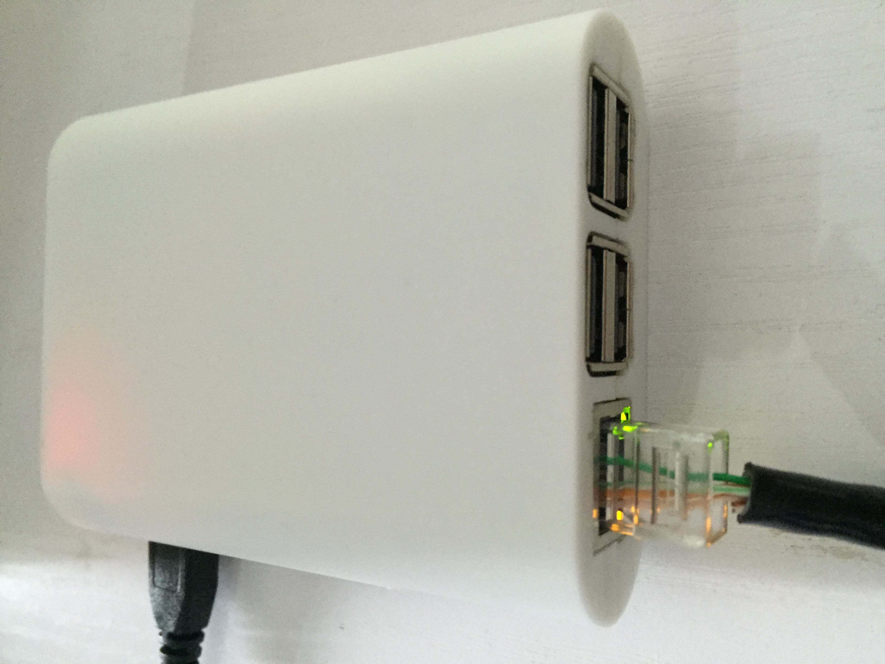
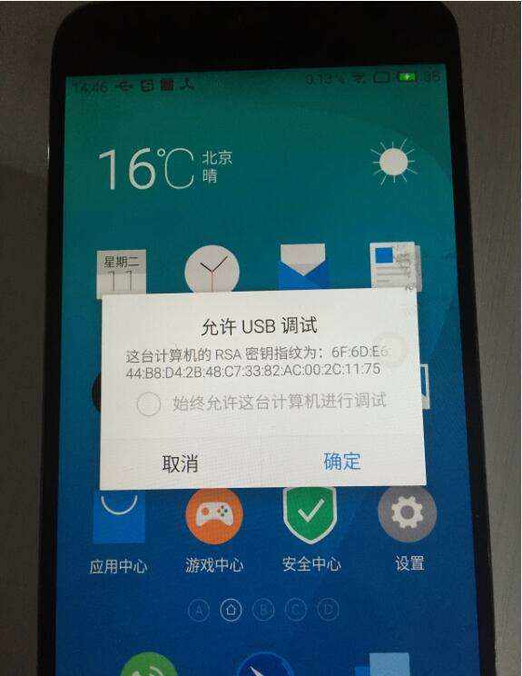
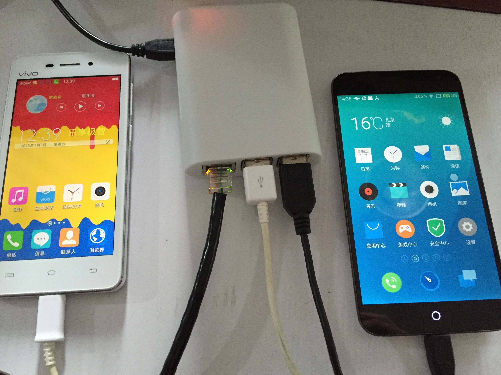
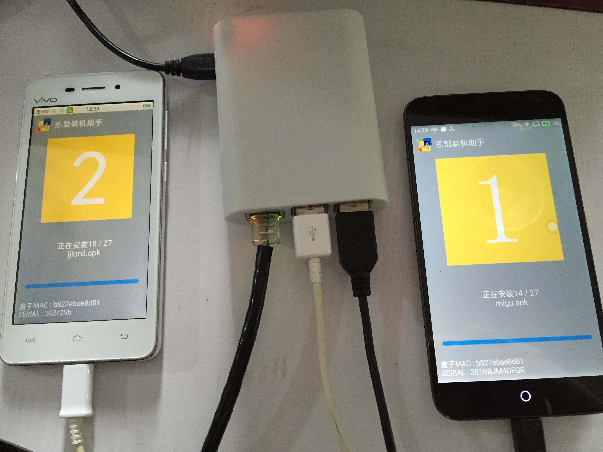
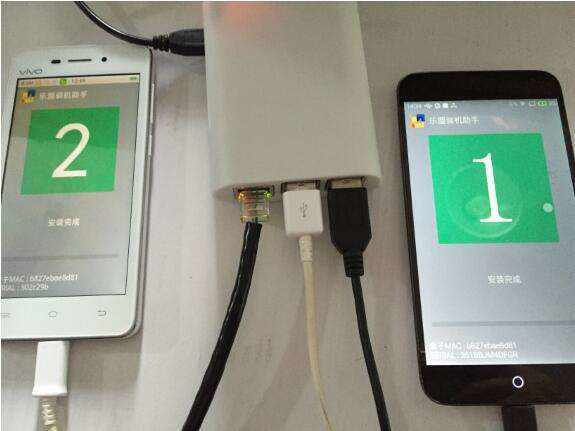

盒子教程
1.1 首先将盒子的取出，将电源线与网线连接上盒子的相应接口，网线必须能联网。
1.2 待指示灯亮灯后将需要装app的手机用数据线连接到盒子上
（USB数据线请自备），最多可支持4台手机同时安装
此时手机应处于未锁屏状态，并注意手机屏幕
若弹出请求调试许可，选择允许调试。
 1.3 开始安装，请注意手机屏幕上的安装进度，安装过程中显示为黄色，安装完成后为绿色且有安装完成提示，本 过程为全自动安装，安装过程中请勿操作手机，以免导 致app安装失败。
1.4 安装完成，待安装界面显示完成后方可拔下手机或数据线。
